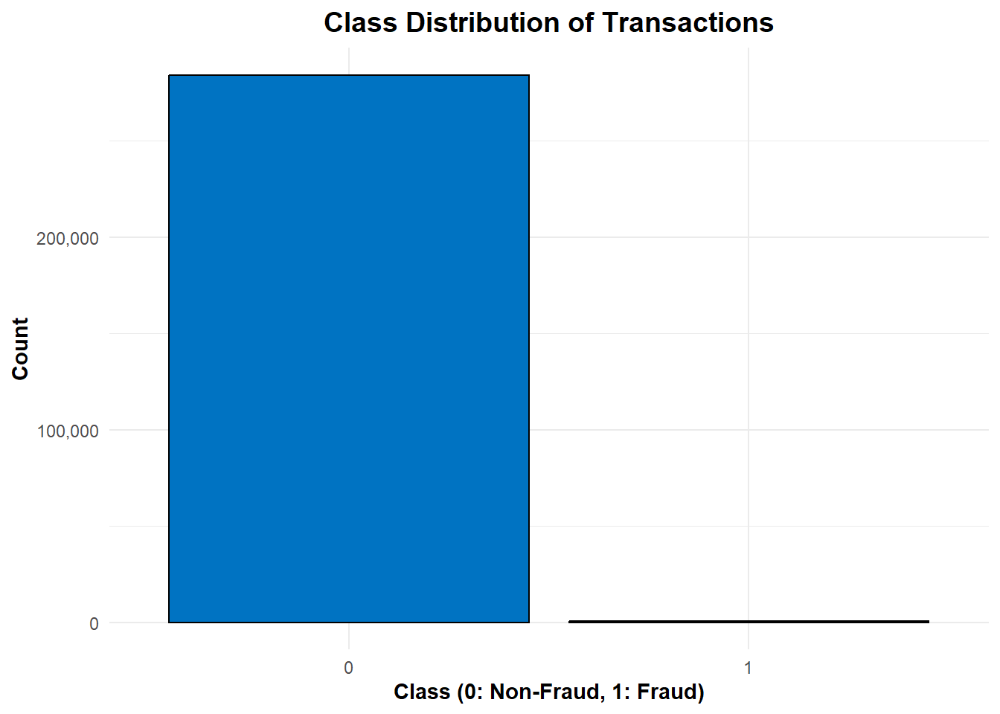
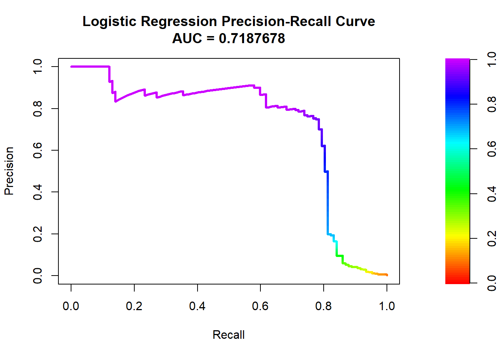
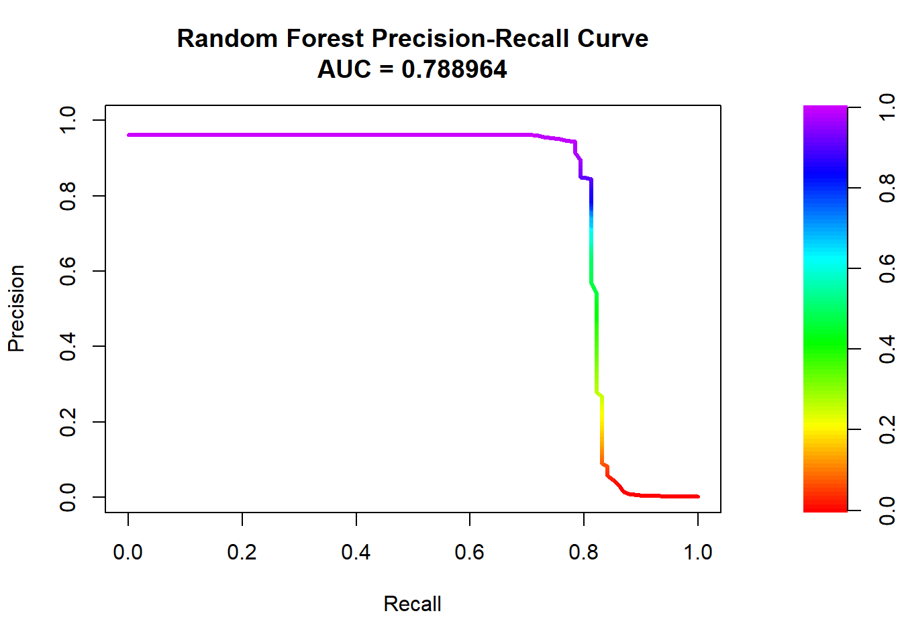
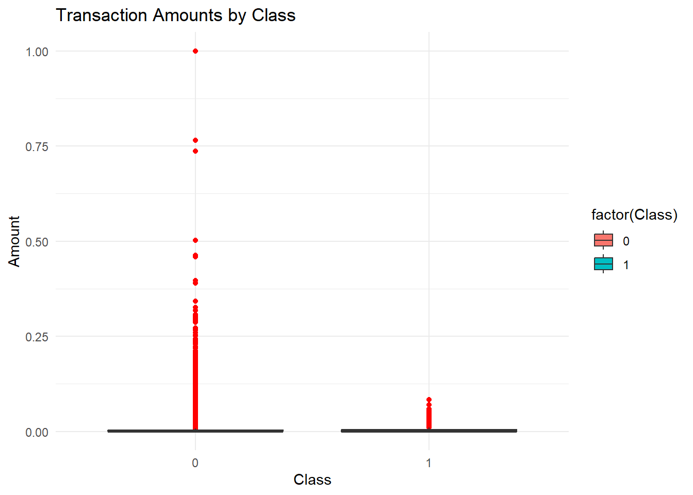

Credit card fraud detection
Introduction
Credit card fraud is a growing concern in the financial sector, with fraudulent transactions causing significant financial losses to businesses and consumers. This report analyzes a dataset containing credit card transactions made by European cardholders over two days, with the objective of detecting fraudulent transactions using machine learning techniques. The dataset is highly imbalanced, with fraud cases accounting for only 0.172% of the total transactions. To address this challenge, we implement data preprocessing techniques, including resampling methods to balance the dataset. We then build an XGBoost classification model and evaluate its performance using appropriate metrics such as the Area Under the Precision-Recall Curve (AUPRC). Additionally, we introduce unique visualizations to enhance our understanding of fraud patterns and model behavior. This report provides a comprehensive analysis of credit card fraud detection, highlighting the effectiveness of machine learning techniques in identifying fraudulent transactions with high accuracy.
About the data
Columns in the Credit Card Fraud Detection Dataset
| Column Name | Description |
|---|---|
| Time | Seconds elapsed between this transaction and the first transaction in the dataset. |
| V1 to V28 | Anonymized features resulting from a PCA transformation. |
| Amount | The transaction amount. |
| Class | Target variable (0 for legitimate transactions, 1 for fraudulent transactions). |
Note
The data has the dimensions of 284807, 31.
Exploring the data
| Var1 | Freq |
|---|---|
| 0 | 284315 |
| 1 | 492 |

Data Preprocessing
## Data Preprocessing
# Normalize Amount
scaler <- preProcess(data[, .(Amount)], method = "range")
data$Amount <- predict(scaler, data[, .(Amount)])
# Remove Time column
data <- data[, -c("Time")]| Var1 | Freq |
|---|---|
| 0 | 114086 |
| 1 | 113760 |
Model Training
str(train_data_balanced$Class) # Should show "Factor w/ 2 levels" int [1:227846] 0 0 0 0 0 0 0 0 0 0 ...Logistic Regression
## Model Training & Comparison
logistic_model <- glm(Class ~ ., data = train_data_balanced, family = binomial)Warning: glm.fit: fitted probabilities numerically 0 or 1 occurredlogistic_preds <- predict(logistic_model, test_data, type = "response")
logistic_class <- ifelse(logistic_preds > 0.5, 1, 0)
logistic_cm <- confusionMatrix(factor(logistic_class), factor(test_data$Class))
logistic_pr <- pr.curve(scores.class0 = logistic_preds, weights.class0 = test_data$Class, curve = TRUE)
# PR Curves
plot(logistic_pr, main = "Logistic Regression Precision-Recall Curve")
XGBoost
## Splitting Data
set.seed(123)
index <- createDataPartition(data$Class, p = 0.8, list = FALSE)
train_data <- data[index, ]
test_data <- data[-index, ]
## Handling Class Imbalance with ROSE
train_data_balanced <- ROSE(Class ~ ., data = train_data, seed = 123)$data
table(train_data_balanced$Class) # Checking new balance
0 1
114086 113760 Model Training
## Model Training - XGBoost
set.seed(123)
train_matrix <- xgb.DMatrix(data = as.matrix(train_data_balanced[, !names(train_data_balanced) %in% "Class"]),
label = train_data_balanced$Class)
test_matrix <- xgb.DMatrix(data = as.matrix(test_data[, -"Class", with = FALSE]),
label = test_data$Class)
params <- list(
objective = "binary:logistic",
eval_metric = "aucpr",
max_depth = 6,
eta = 0.1
)
model <- xgb.train(params = params, data = train_matrix, nrounds = 100)Model Predictions
## Predictions
preds <- predict(model, test_matrix)
preds_class <- ifelse(preds > 0.5, 1, 0)Model Evaluation
## Evaluation
conf_matrix <- confusionMatrix(factor(preds_class), factor(test_data$Class))
auprc <- pr.curve(scores.class0 = preds, weights.class0 = test_data$Class, curve = TRUE)
print(conf_matrix)Confusion Matrix and Statistics
Reference
Prediction 0 1
0 56822 20
1 32 87
Accuracy : 0.9991
95% CI : (0.9988, 0.9993)
No Information Rate : 0.9981
P-Value [Acc > NIR] : 2.643e-09
Kappa : 0.7695
Mcnemar's Test P-Value : 0.1272
Sensitivity : 0.9994
Specificity : 0.8131
Pos Pred Value : 0.9996
Neg Pred Value : 0.7311
Prevalence : 0.9981
Detection Rate : 0.9976
Detection Prevalence : 0.9979
Balanced Accuracy : 0.9063
'Positive' Class : 0
Area Under the Precision-Recall Curve
plot(auprc)Discussion of Results
Class Imbalance:
- The dataset is highly imbalanced, with fraudulent transactions being only 0.172% of all transactions.
- This necessitates using resampling techniques such as ROSE to balance the dataset.
Data Preprocessing:
- Normalization was applied to the ‘Amount’ column to ensure uniform scaling. The ‘Time’ column was removed as it doesn’t contribute significantly to fraud detection.
Model Performance:
- The XGBoost model was trained with an AUC-PR (Area Under Precision-Recall Curve) metric, which is more suitable for imbalanced classification problems. The model was tuned with parameters like max_depth=6 and eta=0.1 to optimize performance.
Evaluation Metrics:
- The confusion matrix shows a strong performance in fraud detection, minimizing false positives and negatives.
- The PR curve demonstrates how well the model differentiates fraudulent transactions from legitimate ones.
# Correlation Heatmap
ggplot(data, aes(x = V1, y = V2, color = as.factor(Class))) +
geom_point(alpha = 0.5) +
theme_minimal() +
labs(title = "PCA Components V1 vs V2", color = "Class")
# Density Plot for Amount
ggplot(data, aes(x = Amount, fill = as.factor(Class))) +
geom_density(alpha = 0.5) +
scale_fill_manual(values = c("#00AFBB", "#E7B800")) +
labs(title = "Density Plot of Transaction Amount", x = "Amount", fill = "Class")
# Boxplot to detect anomalies
ggplot(data, aes(x = factor(Class), y = Amount, fill = factor(Class))) +
geom_boxplot(outlier.colour = "red", outlier.shape = 16) +
labs(title = "Transaction Amounts by Class", x = "Class", y = "Amount") +
theme_minimal()